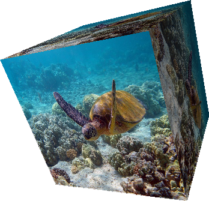
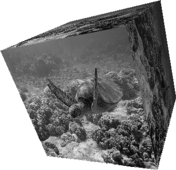
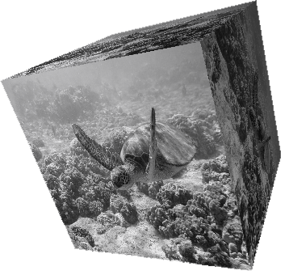
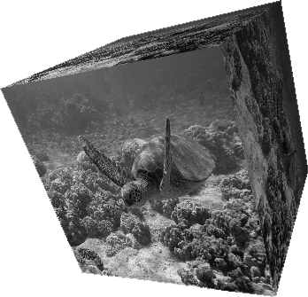

HSL, HSV, HSB & RGB MODEL WITH VIDEO
PROCESSING & HARDWARE - P5.JS
En esta publicación se desea mostrar los resultados obtenidos al realizar el procesamiento de imágenes y videos con shaders utilizando un leguaje de alto nivel, como lo es GLSL, para empezar a aprovechar las características de nuestro hardware y tener resultados muy favorables a nivel de máquina. El cambio y rendimiento, comparado con la velocidad de respuesta es notable en comparación con el procesamiento de imágenes y videos por medio de hardware.
A continuación, se observará cómo se puede obtener una imagen y video a escala de grises a partir del Promedio de los componentes RGB de una imagen y el caculo del coeficiente Luma. Para ello este estudio está basado en la documentación HSL AND HSV , el tutorial de shaders del profesor Andres Colubri en el sitio web processing.org y el tutorial de la página itp-xstory.github.io donde se explican conceptos básicos de shaders con p5.js. En gran medida la construcción de este programa está basado en el ejemplo HSL, HSV, HSB & RGB MODEL del procesamiento de imágenes con software, ya que se manejan funciones y procedimientos muy similares, sin embargo, para facilitar el entendimiento de cómo funciona el procesamiento por hardware, hay que pensar que lo que hacíamos para uno solo pixel en software ahora lo vamos hacer al mismo tiempo para todos los pixeles.
Comandos
| Tecla | Luminancia | Expresión | Imagen resultante |
|---|---|---|---|
 |
Original |  |
 |
 |
Media aritmética |  |
 |
 |
Componente más grande |  |
 |
 |
Rango medio |  |
 |
 |
Promedio ponderado Luma(SDTV) |
 |
p5*js Code
let theShader;
let shaderTexture;
let img;
let cam;
let theShaderVideo;
let shaderVideo;
let video;
let angle=0;
let gray = 0;
function preload(){
img = loadImage('https://upload.wikimedia.org/wikipedia/commons/thumb/b/bb/Hawaii_turtle_2.JPG/640px-Hawaii_turtle_2.JPG');
video = createVideo('https://d2v9y0dukr6mq2.cloudfront.net/video/preview/GTYSdDW/divers-watching-sea-turtle-swim-through-coral-reef_zksb-usls__PMNW.mp4');
video.hide();
// Cargar los shaders
theShader = loadShader('texture.vert','texture.frag');
theShaderVideo = loadShader('texture.vert','texture.frag');
}
function setup() {
pixelDensity(1);
// Se requiere trabajar con WEBGL
createCanvas(windowWidth, 400, WEBGL);
noStroke();
// inicializar la capa del createGraphics
shaderTexture = createGraphics(512, 512, WEBGL);
shaderVideo = createGraphics(windowWidth, windowHeight, WEBGL);
// Quitar bordes en el createGraphics
shaderTexture.noStroke();
shaderVideo.noStroke();
video.loop();
}
function draw() {
// Se pasa el shader a la capa del createGraphics
shaderTexture.shader(theShader);
shaderVideo.shader(theShaderVideo);
// Valores uniform para el fragment shader
theShader.setUniform("u_img", img);
theShader.setUniform("u_key", gray);
theShaderVideo.setUniform('u_img', video);
theShaderVideo.setUniform('u_key', gray);
// Renderizar el shader
shaderTexture.rect(0,0,width,height);
shaderVideo.rect(0,0,width,height);
background(255);
// Puntos de luz
pointLight(255, 255, 255, 0, 0, 500);
// Efecto linterna
let dx= mouseX-width/2;
let dy= mouseY-height/2;
pointLight(100,250,255,dx,dy,100);
translate(0, 0, 0);
push();
//Se pasa el shader como textura
texture(shaderTexture);
translate(200, 0, 0);
rotateZ(angle);
rotateX(angle);
rotateY(angle*2);
box(200);
pop();
// Rotacion de la caja
angle += 0.002;
push();
// Se pasa la imagen original como textura
texture(img);
// Numero de puntas de la figura
let ellipseFidelity = int(map(mouseX, 25, width, 8, 100));
ellipse(-250, 0, 350, 350, ellipseFidelity);
//plane(500,500);
pop();
push();
//Se pasa el shader del video como textura
texture(shaderVideo);
translate(0, 0, -100);
plane(900,500);
pop();
}
// Se ejecuta cuando se presiona cualquier tecla
function keyPressed() {
if (key === '0') {
gray = 0;
} else if (key === '1') {
gray = 1;
} else if (key === '2') {
gray = 2;
} else if (key === '3') {
gray = 3;
} else if (key === '4') {
gray = 4;
}
}
function windowResized(){
resizeCanvas(windowWidth, windowHeight);
}
Vertex Code
attribute vec3 aPosition;
attribute vec2 aTexCoord;
// Obtener texcoords
varying vec2 vTexCoord;
void main() {
// Copia los texcoords
vTexCoord = aTexCoord;
// Copia la poscicion de los datos en vec4, usando 1.0 como el componente w
vec4 positionVec4 = vec4(aPosition, 1.0);
// Escala la posicion por dos y la mueve al centro de la pantalla
positionVec4.xy = positionVec4.xy * 2.0 - 1.0;
// Envia la informacion del vertex al fragment shader
gl_Position = positionVec4;
}Fragment Code
// Estas son definiciones necesarias que le permiten a la tarjeta gráfica saber cómo representar el sombreador
#ifdef GL_ES
precision mediump float;
#endif
varying vec2 vTexCoord;
// Valores que se pasan desde p5
uniform sampler2D u_img;
uniform int u_key;
// Funcion para convertir un color a escala de grises
float grayscale(vec3 color) {
float lightness;
if (u_key==1){
float I=(color.r + color.g + color.b) / 3.0; // Promedio de los tres componentes
lightness = I;
} else if (u_key==2){
float V= max(max(color.r,color.g),color.b); // Componente mas grande de un color
lightness = V;
} else if (u_key==3){
float L=(max(max(color.r,color.g),color.b)+min(min(color.r,color.g),color.b))/2.0; // Promedio entre el componente mas grande y el mas pequeño
lightness = L;
} else if (u_key==4){ // Promedio ponderado de RGB con corrección gamma (Luma)
float Y= dot(color, vec3(0.299, 0.587, 0.114)); // SDTV
lightness = Y;
}
return lightness;
}
void main() {
vec2 uv = vTexCoord;
//Invierte la posicion de la cordenada para que la imagen no quede alrreves
uv.y = 1.0 - uv.y;
vec4 tex = texture2D(u_img, uv);
// Escala de grises
float gray =grayscale(tex.rgb);
float threshR = gray ;
float threshG = gray ;
float threshB = gray ;
if (u_key==0){
threshR = tex.r ;
threshG = tex.g ;
threshB = tex.b ;
}
vec3 thresh = vec3(threshR, threshG, threshB);
// Render de la salida
gl_FragColor = vec4(thresh, 1.0);
}